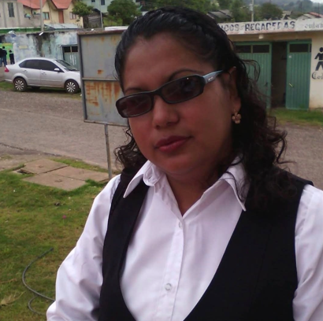
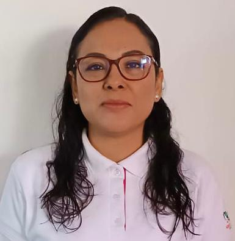
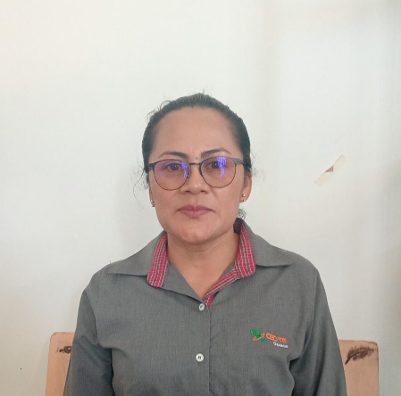
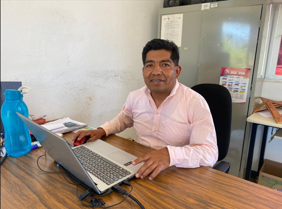
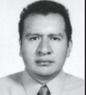
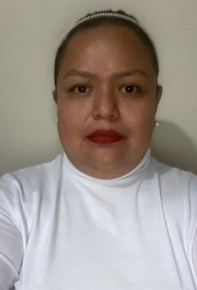

LIC. LISETTE ROSADO ORTIZ
Docente asociado ´B´ Medio Tiempo Correo: lisetteros1179@gmail.com Teléfono: 951 249 8805 Formación académica Licenciatura en contaduría Instituto Tecnológico del istmo. Experiencia Docente en CECYTEO Emsad desde octubre de 2004, con más de 21 años de servicio. Perfil Especialista en Ciencias Sociales y Humanidades, con formación complementaria de innovación pedagógica, habilidades digitales y evolución formativa. Formación Académica Licenciatura en Contaduría Instituto Tecnológico del Istmo. Experiencia Laboral CECYTE EMSaD Docente Asociado B MT. Laborando desde el 7 de octubre de 2004 hasta la actualidad. Cuenta con aproximadamente 21 años de servicio.

LIC. MAEVA CABRERA VEGA
Docente en Formación académica Licenciatura en informática. Formación Académica: Licenciada en Informática Instituto Tecnológico del Istmo Periodo 2001-2006 Juchitán, Oaxaca. Especialidad en Competencias Docentes Universidad Pedagógica Nacional Periodo 2012-2013 Ajusco, México. Maestra en Ciencias en Desarrollo Regional y Tecnológico Instituto Tecnológico de Oaxaca Periodo 2017-2019 Oaxaca de Juárez, Oaxaca. Estancia de Investigación Universidad El Bosque Septiembre 2019 Bogotá, Colombia.

ING. PAULA LIDIA SANCHEZ HERNANDEZ
Docente Asignaturas Ciencias Naturales Experimentales y Tecnología. Perfil Maestra con experiencia en el área de Ciencias Naturales, impulsado el aprendizaje práctico y experimental de los estudiantes del EMSAD 45.

ING. ROGELIO BAUTISTA BARRIOS
Profesor Titular ¨A¨ Medio Tiempo Correo: rbbarrios78@gmail.com Teléfono: 951 411 1574 Formación académico Maestría en Docencia de las Ciencias (Titulo y Cédula Profesional) Asignaturas Pensamiento matemático I, II y III Temas selectos matemáticos I y II Taller de pensamiento variacional I y II Perfil Especialista en el desarrollo del pensamiento matemático con enfoque práctico utilizando GeoGebra, gráficas, prototipos y maquetas a escala.

LIC. JOSE LUIS MORALES MARTINEZ
Director Director del EMSAD 45, San Pablo Tijaltepec, responsable de la conducción estratégica del plantel, ha impulsado el desarrollo académico, deportivo y cultural de los estudiantes, fortaleciendo la vinculación con la comunidad y autoridades locales.

LIC. ALEXIS GERMAN CALDERON MEJIA
SÍNTESIS Sub Director del EMSAD 45, San Pablo Tijaltepec, responsable de la conducción estratégica del plantel, ha impulsado el desarrollo académico, deportivo y cultural de los estudiantes, fortaleciendo la vinculación con la comunidad y autoridades locales. Alexis Germán Calderón Mejía es un profesional con experiencia en administración, liderazgo y ventas, especializado en la gestión de equipos y estrategias comerciales. Experiencia Destacada Gerente General en ONL Empresarial (2019–2022) Dirección de ventas para TELMEX. Contratación y capacitación de personal. Planeación estratégica y crecimiento empresarial. Gestión de recursos y supervisión de equipos de trabajo. Subgerente Administrativo en Representantes Ideal (2018–2019) Liderazgo y motivación de equipos de ventas. Capacitación de supervisores y vendedores.
LIC. ANA IRENE RIOS MENDOZA
Docente Asignaturas Lengua y Comunicación Perfil Licenciada especializada en el área de lenguaje y comunicación, apoya el desarrollo de habilidades comunicativas lectura, escritura y expresión oral de los estudiante.
